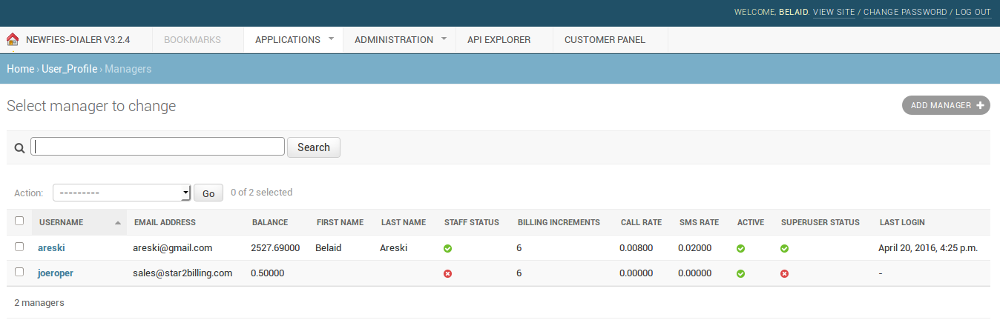
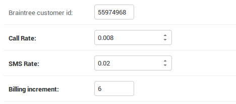
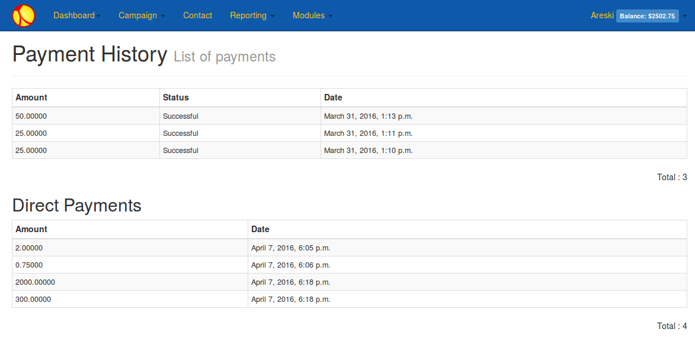
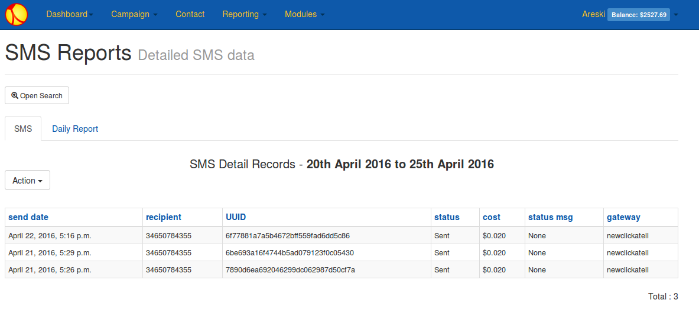
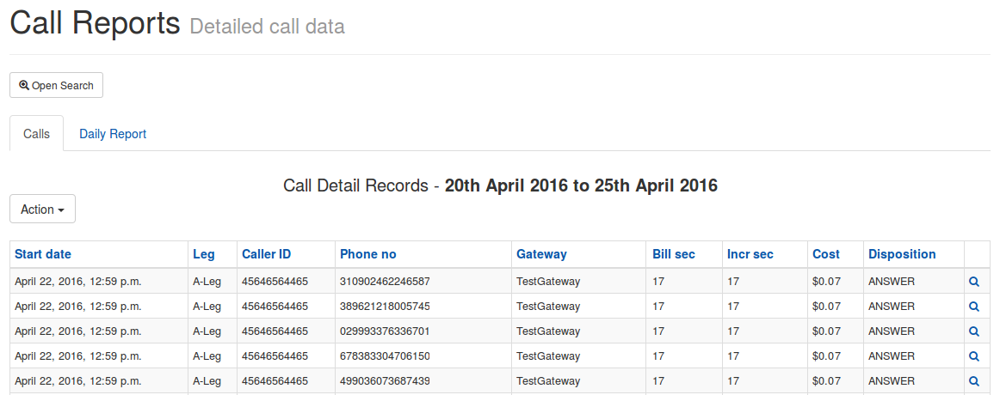
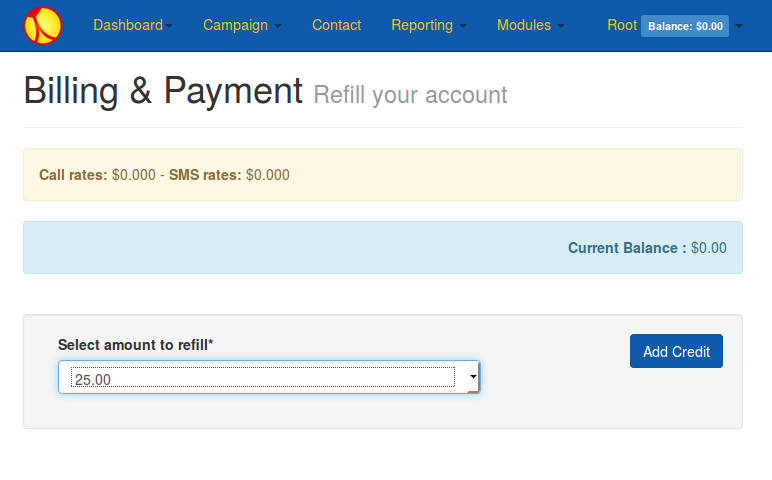
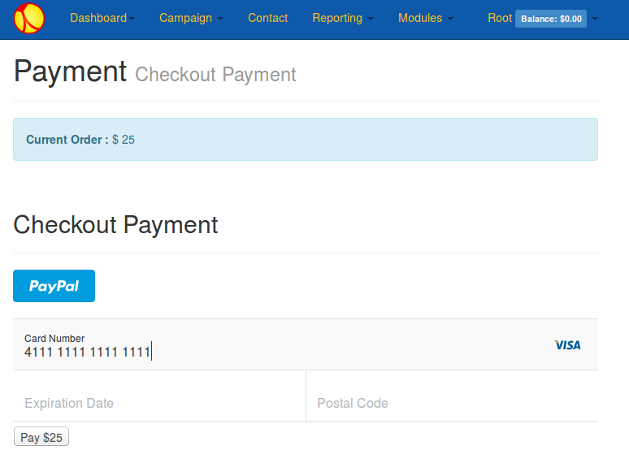
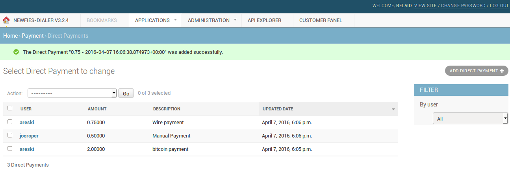
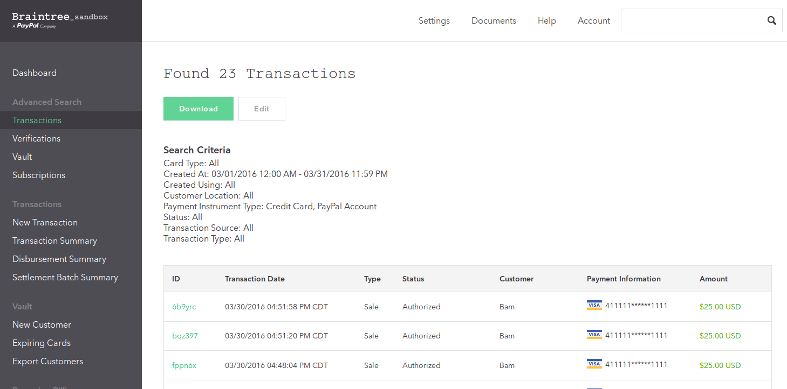
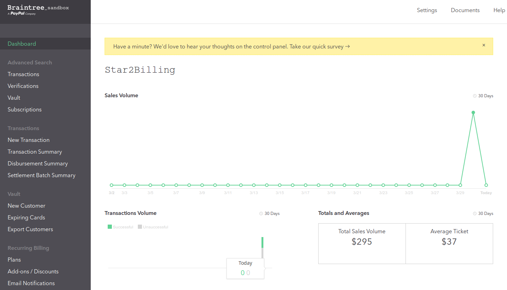

SMS & Call Billing Module¶
DialerAI has always been Multi-tenant and to make it a complete solution for business, we recently added support for SMS & Call billing, as well as Braintree Payment Integration. Braintree is a division of Paypal. These features are vital to build a SaaS platform and resell Voice Broadcasting services to your customers.
In the following sections we will go into detail about how the Billing module works and describe the Braintree payment module that allows your customers to recharge their account in few clicks.
SMS & Call Billing¶
DialerAI offers a simple and powerful approach for billing, you can easily define a rate for both SMS and Calls.
It follows simple rules, we define a Call rate per minute and a SMS rate. If you don’t want to charge your customer for calls or SMS, for instance if DialerAI is being used inside an internal organization, then you can set these values to 0 and no charge will be applied.
SMS & Call Rates can be configured per user via the admin UI.
Go to the User listing:
{kind=link}
Edit the user and set the desired value for Call/SMS Rates:
{kind=link}
Customer will see these values on the customer UI by clicking on his name in the menu:
{kind=link}
Lets see how SMS and call Billing works.
SMS Billing¶
For each SMS Sent successfully a charge will be applied
Example:
- SMS rate: $ 0.02
- Sent 1000 SMS: Total cost $20
Your customers use DialerAI normally, but if the customer balance runs low on credit, then SMS will not be sent and the campaign will stop running until credit is available.
SMS reporting will display the cost of SMS:
{kind=link}
Call Billing¶
VoIP Billing supports a rate per minute and billing increment. All calls are charged at the same rate. If the call is connected and the billing duration is more than 0, the call will be charged using the defined call rate & increment for the user.
Example 1 (No Billing increment):
- Call rate: $ 0.04 - increment: 0
- 1000 Calls of 30 seconds: Cost per call $0.02
- Total Billed Duration 500 Minutes -> Total cost $20
Example 2 (with Billing increment):
- Call rate: $ 0.04 - increment: 6
- 1000 Calls of 32 seconds: Cost per call $0.024
- Total Billed Duration with increment = 600 Minutes -> Total cost $24
Your customers use DialerAI normally, but if the customer balance runs below the minimum credit to call, then calls will not be sent and the campaign will stop running until credit is applied.
Call reporting will display the cost of call:
{kind=link}
Negative Balance Mitigation¶
With potentially hundreds or thousands of calls running concurrently, there is always a risk of negative balance, however DialerAI has been designed to mitigate that risk with a number of techniques including:
- Slowdown of campaign as balance nears zero
- Minimum credit to call.
- Reservation of balance.
- Minimum Credit to send SMS
These negative balance helpers can be adjusted in the configuration files. Contact support for assistance.
Payments¶
Manual/Direct Payment¶
As standard, DialerAI supports accounting for manual payments such as Bank Transfer or other payments system specific to your country. For this we introduced a way for the admin to add Manual/Direct Payment, to refill the user account and leave an audit trail in the platform so your customers can see those refills too.
The admin can do this easily via the admin backend:
URL:
Credit Card Payments¶
DialerAI supports Braintree, a division of Paypal. Credit Card integration is included at no extra charge on our larger systems.
- There are a few steps that need to be taken to sign up to Braintree and prepare your system:
- Domain Name pointed at your DialerAI installation.
- SSL certificate so that DialerAI is on an HTTPS address, we recommend https://letsencrypt.org/
- Sign up to Braintree at https://apply.braintreegateway.com/signup/us. We will need your Merchant Keys to configure DialerAI.
- SAQ: PCE compliance questionnaire, see https://articles.braintreepayments.com/reference/security/pci-compliance
Once the Credit Card Billing Module is installed, then customers will be allowed to “Add Credit” to their account.
{kind=link}
The amounts that the customer can select is configured in the configuration file as can the payment description appearing on the customer’s credit card statement. Contact support to change these values.
After selecting the amount to refill, the customer will be taken to the credit card form.
At this point the customer can opt to pay via Paypal instead of credit card. Credit card information is not held locally, but by Braintree. Credit card information is stored by Braintree to allowing the customer to future purchases with one click.
{kind=link}
Customers will then be able to see their payment history.
On the Admin pages, there is a report detailing the transaction including the transaction ID which can be used to reference the payment attempt with Braintree.
Braintree¶
Your Braintree account allows you to configure some options for security, as well as track successful and failed transactions.
Braintree Transactions
Braintree Dashboard
Technical¶
There are a number of configuration settings in the DialerAI config file, settings_local.py.
Generally, these will be set by the support team.
Billing Settings¶
# BILLING
# =======
# Feature switch to enable or disable payment in DialerAI UI
BILLING_SWITCH = True
# Currency displayed $ / €
BILLING_CURRENCY_DISPLAY = '$'
# Define the default Billing increment per Customer, this value is specified per user
BILLING_INCREMENT = 6
- BILLING_SWITCH is useful if you don’t need billing and want to hide all the billing features for your users/customers.
- BILLING_CURRENCY_DISPLAY needs to display a difference currency, set the symbol for your currency.
- BILLING_INCREMENT: this is the default billing increment but the value set through the admin UI will take priority.
Negative Balance Helpers¶
The following Negative Balance settings can be adjusted to suit your preferences which may also depend on the trust & relationship you have with your customers.
# Negative Balance helpers
# ~~~~~~~~~~~~~~~~~~~~~~~~
# 3 settings are provided to avoid reaching negative balance, they can be tweaked
# to one preferences, depending of the type of business and customer relationship
# BILLING_MIN_CALL_CREDIT_DIAL
# BILLING_MIN_CREDIT_DIAL settings
# BILLING_MIN_CREDIT_SMS
# Define credit needed per call in order to be authorized to dial out
# if you outbound at 100 calls per minute, you need 10$ on your account
# a good value for BILLING_MIN_CREDIT_DIAL is a bit above the cost per call you would expect
BILLING_MIN_CALL_CREDIT_DIAL = 0.05
# Define the minimum amount of credit to outbound calls
BILLING_MIN_CREDIT_DIAL = 0
# Define the minimum amount of credit to send SMS
BILLING_MIN_CREDIT_SMS = 0.02
Additionally there is a setting BILLING_LOW_CREDIT_WARNING that allow you to configure a notification on the UI when balance is under a specific threshold.
- ::
- # Define threshold to warn user on the UI when his credit are low BILLING_LOW_CREDIT_WARNING = 5
Payments¶
Set the top-up amounts selectable by the customer as well as the text on the customer’s credit card statement.
# PAYMENT
# =======
# Authorized amount for refill
AMOUNT_REFILL = (('25', '25.00'), ('50', '50.00'), ('100', '100.00'), ('250', '250.00'), ('500', '500.00'), ('1000', '1000.00'))
PAYMENT_DESCRIPTION = 'Voice Broadcasting Service'
Braintree Settings¶
These settings are used to configure your Braintree account.
# BRAINTREE
# =========
BRAINTREE_SANDBOX = True
BRAINTREE_MERCHANT_ID = 'XXXXXXXXXXXXXXXX'
BRAINTREE_PUBLIC_KEY = 'YYYYYYYYYYYYYYYY'
BRAINTREE_PRIVATE_KEY = 'this_is_your_private_key'
There is a setting called braintree_id in the admin interface: